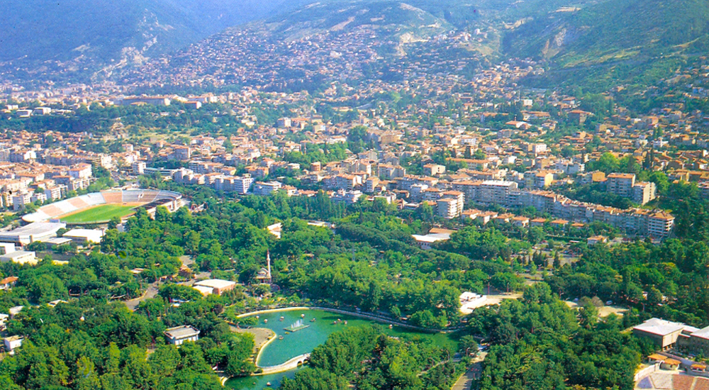
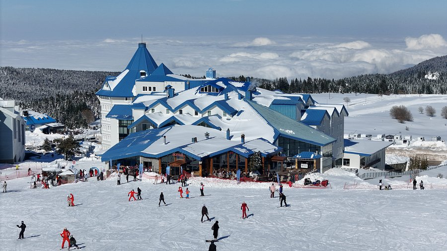
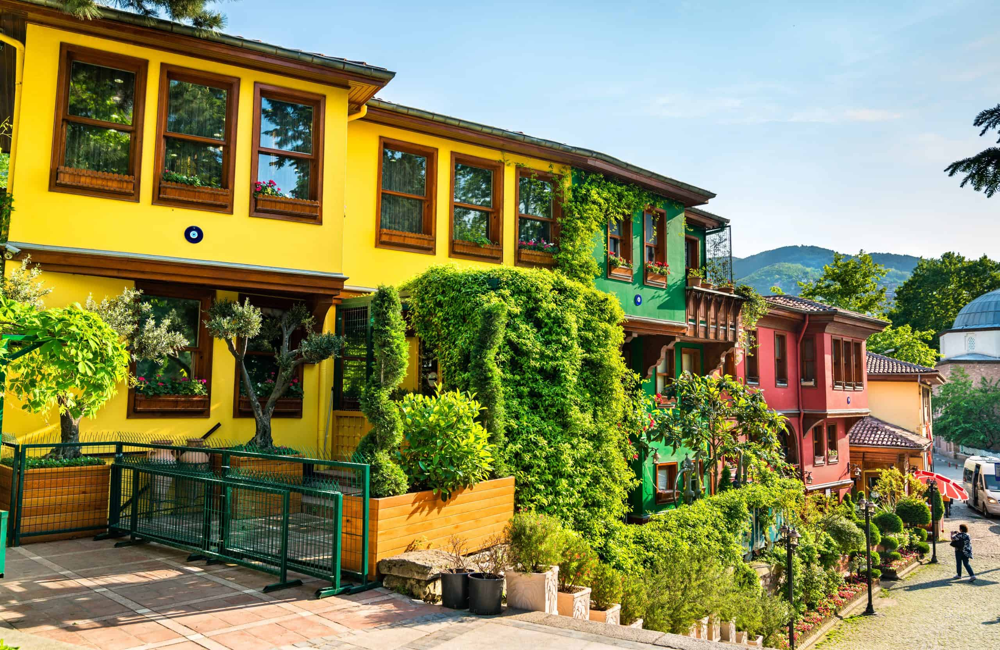
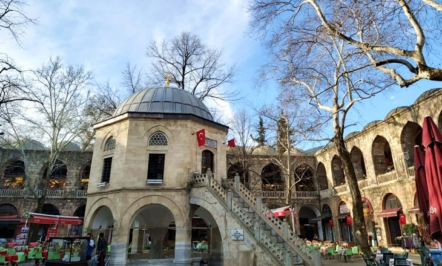
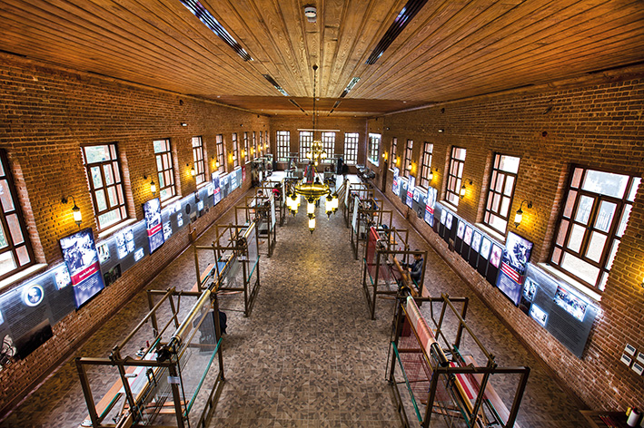
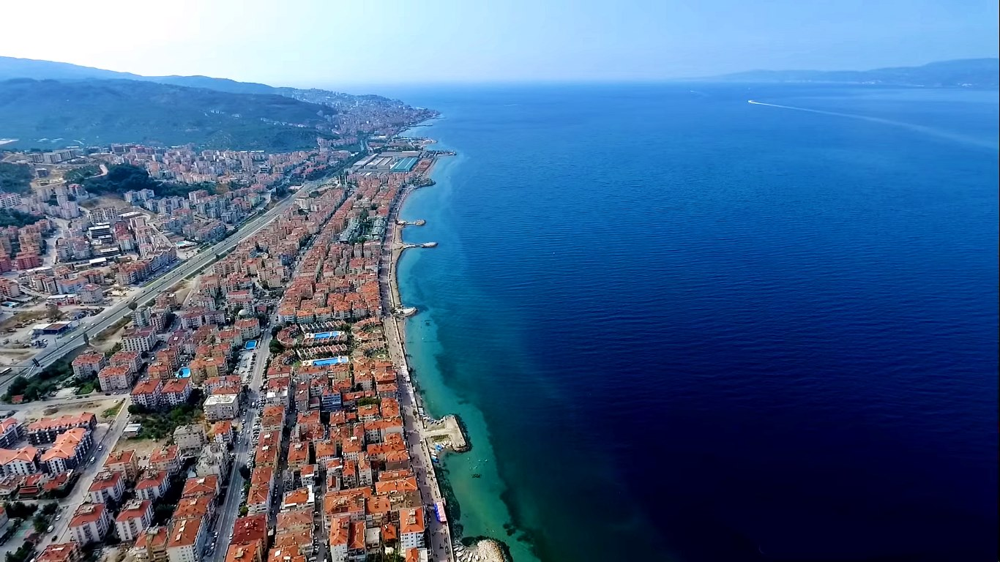

Bursa'dan Kareler

Bursa Panoramasi
Uludag'in eteklerindeki sehir manzarasi

Ulu Cami
Bursa'nin simgesi, 1399 yilindan kalma

Uludag
Turkiye'nin kayak merkezi
Yesil Turbe
Osmanli mimarisinin saheseri
Yesil daglari, tarihi camileri ve dogasiyla Turkiye'nin incisi

Uludag'in eteklerindeki sehir manzarasi
Bursa'nin simgesi, 1399 yilindan kalma

Turkiye'nin kayak merkezi
Osmanli mimarisinin saheseri
1399'da Yildirim Bayezid tarafindan yaptirilan Bursa'nin en buyuk camisi. 20 kubbesiyle dikkat ceken essiz bir Osmanli yapisi.
2543 metre yuksekligiyle Turkiye'nin en buyuk kayak merkezi. Kisin kayak, yazin trekking icin ideal.

UNESCO Dunya Mirasi Listesi'nde yer alan, 700 yillik tarihi Osmanli koyo. Tas evleri ve dar sokaklari buyuleyici.

15. yuzyildan kalma tarihi ipek carsisi. Bursa ipegi dunyaca meshurdur ve burada el yapimi urunler bulunur.

Bursa'nin ipekcilik mirasini anlatan onemli bir durak. Sehir tarihini ve uretim kulturunu daha iyi hissettirir.

Marmara kiyisindaki tarihi ilce. Guzel sahil yuruyusleri, taze balik restoranlari ve huzurlu atmosferiyle ilgi ceker.
Kayseri'den Bursa'ya tasindigimda sehrin yesilligi beni cok etkiledi. Uludag kisin muhtesem, sehir merkezi canli ama bunaltici degil. Tarihi carsida gezmek, Iskender yemek, kestane sekeri almak bunlar Bursa'nin vazgecilmezleri. Birkac yildir buradayim ve gercekten sevdim bu sehri.